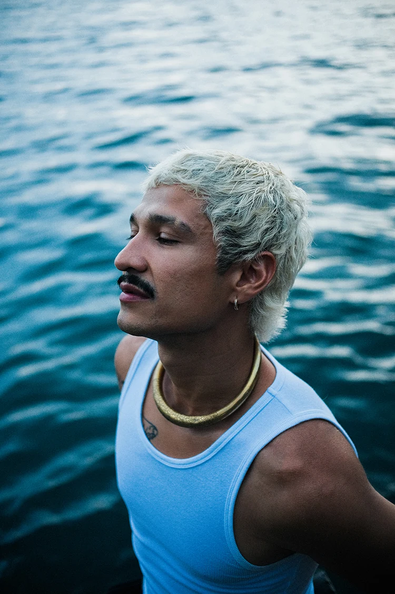
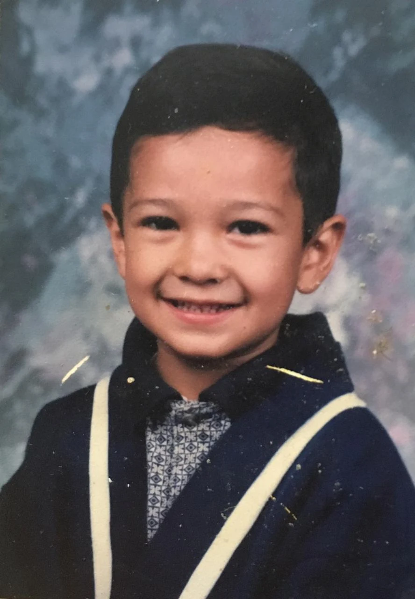
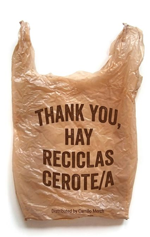
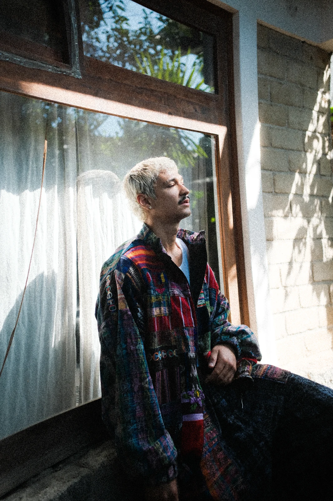
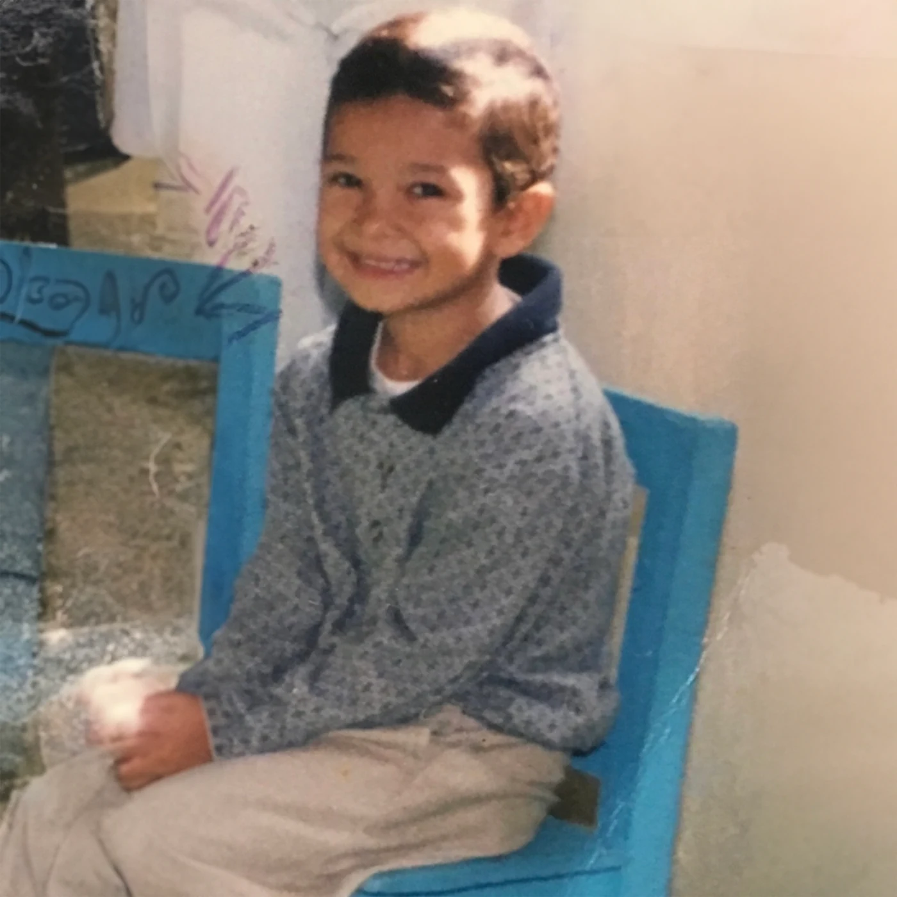
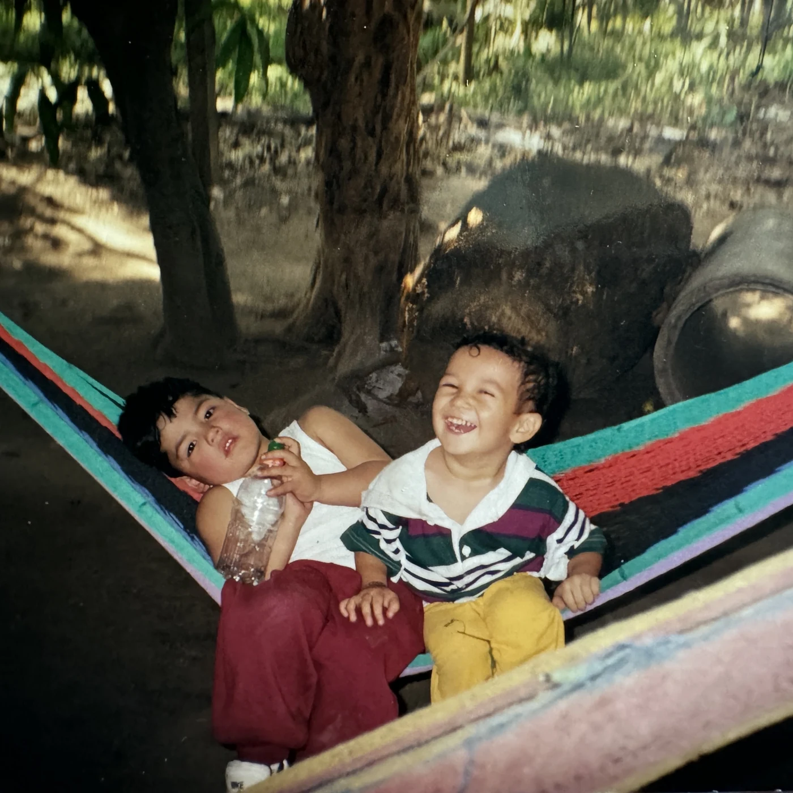
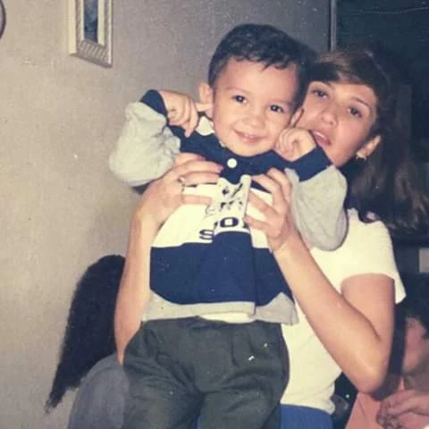
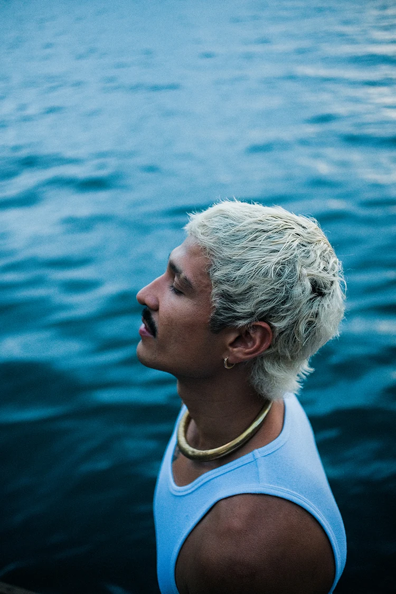

01 / PHOTOS@bencarrillo
Loading TikTok…
This post cannot play here. Open it on TikTok.
Open on TikTok ↗This is the world of
from eternal spring
to the Pacific ↗
Ahuevix · Maltiox
mis baddiez!! · simón!
Choose a chapter.
Or keep turning the page →


Ben Carrillo is a Guatemalan artist, singer-songwriter, and creative director based in Los Angeles.
At just 15 years old, he left his home country and crossed the border on foot in pursuit of the American dream and a better future for himself and his family.
Ben has collaborated with Latin music icon Thalía, opened for global superstar Bad Bunny, and delivered a standout performance on COLORS. In October, he released his third studio album, DREAMER, which earned critical recognition, including No. 29 on Rolling Stone’s 50 Best Latin Albums of 2025.
His single “Centroamérica” surpassed 500,000 streams across platforms within just four months. With co-signs from J Balvin, Feid, and Thalía, Ben continues to build his own path while proudly representing and uplifting the Latin immigrant community in the United States.


BEN CARRILLO is a Guatemalan singer, songwriter and creative director based in Los Angeles. His music brings together rap, reggae, rock, reggaeton and ballads in a voice of his own.
Discover his story ↗ SEVEN SONGS. ONE UNIVERSE.
SEVEN SONGS. ONE UNIVERSE.Press play. Let the songs tell the rest.
Rap. Reggae. Rock. Reggaeton.
And everything still waiting to be told.
Preview collection · US shipping only · Payments not active.
Some journeys become songs.
An independent artist still building his own path. For his family. For his roots. For everyone who never gave up.
This post cannot play here. Open it on TikTok.
Open on TikTok ↗This post cannot play here. Open it on TikTok.
Open on TikTok ↗This post cannot play here. Open it on TikTok.
Open on TikTok ↗This post cannot play here. Open it on TikTok.
Open on TikTok ↗This post cannot play here. Open it on TikTok.
Open on TikTok ↗




New music, upcoming shows and what comes next. Straight to your inbox.
mis baddiez!!The next chapter is taking shape.
Be among the first to hear ↗Music is where we meet.
See you in the next song.
A signature, a message, a little doodle.
For now, drawings stay in this browser. The shared wall is coming.